Midjourney 出图教程
从 Prompt 关键词的写法公式出发，用主体、环境、构图、风格化与图像设定五步拆解一张美妆运营图，再结合 U / V 放大变体、Remix 模式二次修正，直到输出可用成图。
本文整理自《Midjourney 出图教程》，版权归原作者所有。操作步骤与配图按原文顺序转录，命令、参数与提示词保留英文原样，方便对照练习。
00 / Prompt：与 AI 沟通的媒介
Prompt 关键词描述可以理解为与 AI 创作沟通的媒介，我们需要将脑海中构想的画面用恰当的提示词（语句）描述出来，并通过它来缩小 AI 想象的空间，它才能听懂、理解并产出令人满意的画面。
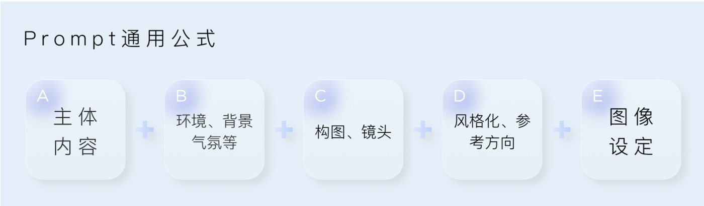
另外值得注意的是，相同的描述文本内容，词语的顺序、前后词汇的关系对于内容的产出影响差异也会非常的大。所以关键词描述的写法至关重要。
Prompt 的大致写法由几个部分构成：主体、环境氛围、构图、风格化，以及其他设定。我们接下来通过 Prompt 描述公式，一步步完成一张美妆运营图的设计。
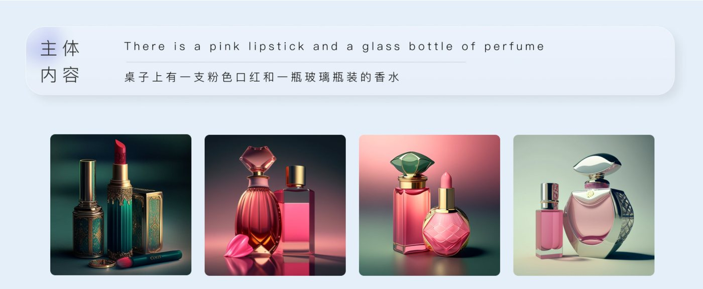
01 / 主体内容描述
首先是主体内容的描述，通常可以拆解为：存在几个「什么样的」的主体，在做什么动作，并附带了其他的什么动作。
例如：There was a pink lipstick and a glass bottle of perfume，可以得到如下的主体内容 —— 香水口红的图像。
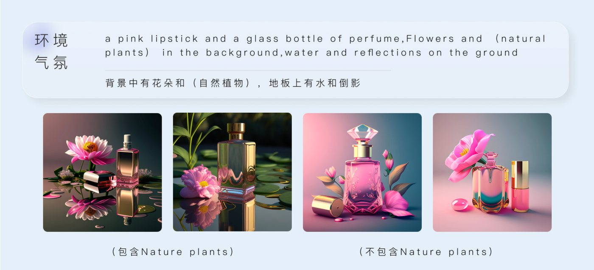
02 / 场景与环境
其次为主体内容添加场景或环境，例如给定某些地点或物件。比如案例中，我们指定背景花朵、自然植物，以及倒影等词汇。
通过观察四张图，可以发现模型中 Nature Plants 这个词汇对画面有较大的影响，决定了不同风格的背景以及复杂程度。同时也能发现，尽管只相差了一个描述词，但前后结果仍存在较大的差异，所以大家在调试画面的过程中可以从词汇逐个调整，以尽量减少画面的随机跳变。
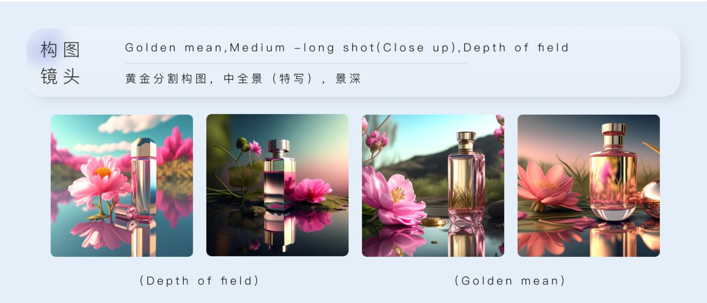
03 / 构图与镜头
然后是构图与镜头，比如左侧两张图强调景深，右侧两张图强调了构图位置等。
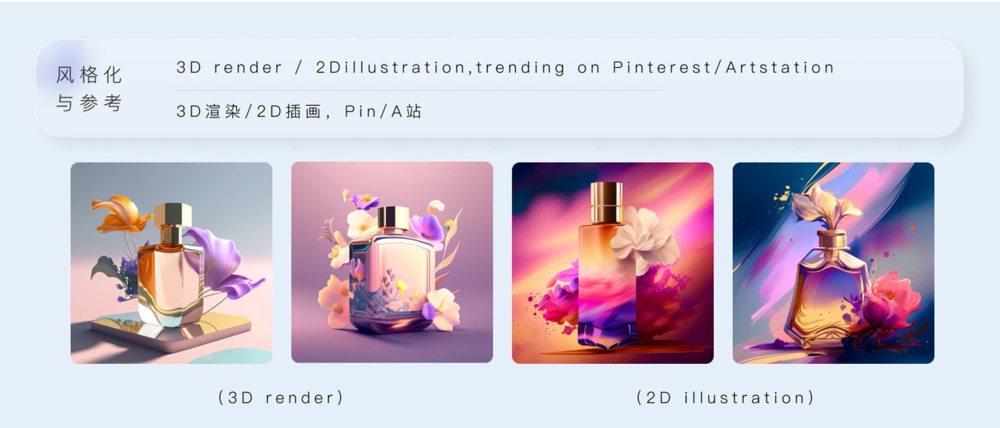
04 / 风格化与参考方向
接下来是风格化与参考方向，可以添加上艺术家名字或平台名字，或直接将图像风格写出来；比如说 3D 渲染还是 2D 画风，可以从结果的明显区别中感受到差异。
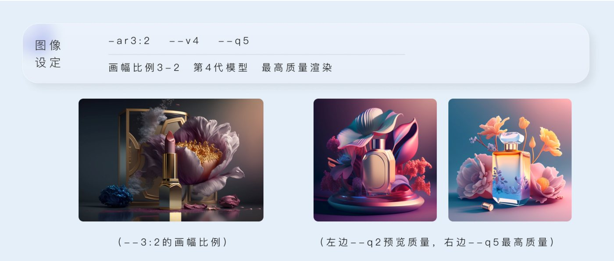
05 / 图像设定与画幅
最后是图像的设定，例如 --q 5 代表最高图像质量；同时你也可以通过类似 8k, ultra realistic 这样的词汇来对画质做强调。
第二点是画幅：--ar 3:2 表示横纵比为 3 比 2 的横幅图像，--ar 9:16 表示横纵比为 9 比 16 的纵向图像；-- v4 代表最新的第四代计算模型。
最终通过以上五个小步骤，我们可以得出一大批风格各异的草图。
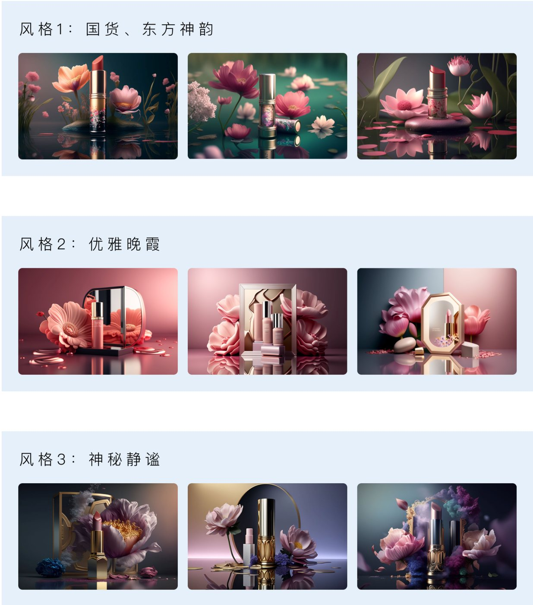
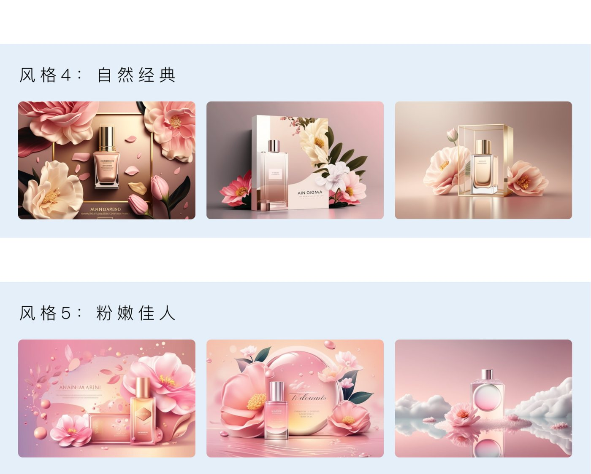
再通过第一步的风格调性做筛选，可以初步得出不同类型的初稿，以满足不同的品类需求。
06 / 5.4 二次修正进阶调整
当取得满足需求的初稿之后，我们可以使用 Midjourney 的进阶功能，来提升图像质量或对图像画面做调整；以下是几个使用频率最高的调整功能。
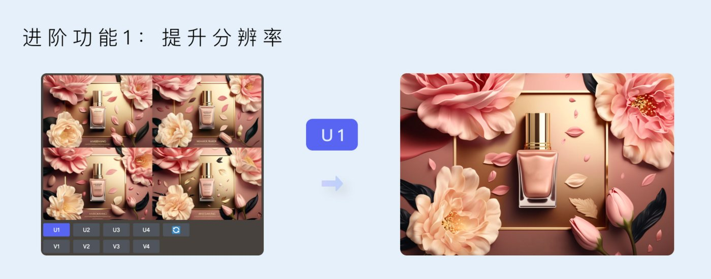
1. U 按钮 · 放大分辨率
首先是通过点击成图下方的 U 按钮，可以放大对应序号的图片的比例，来提高其分辨率。
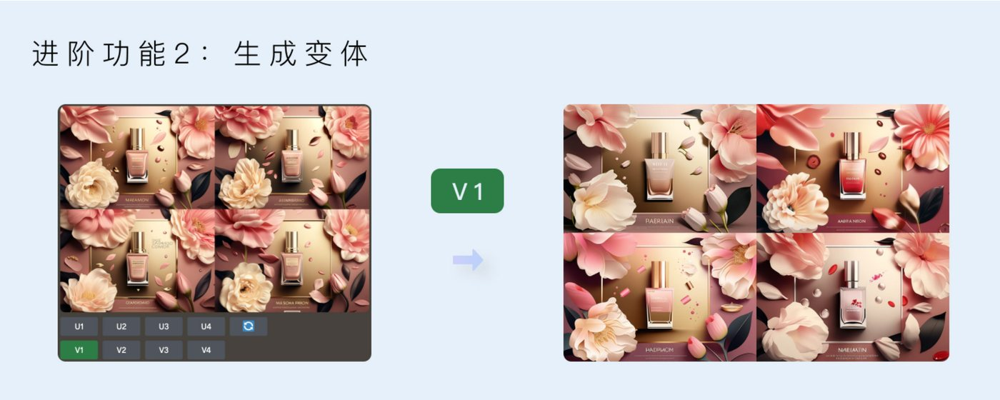
2. V 按钮 · 生成变体
第二种，通过点击图片下方的 V 按钮，可以基于原描述词，生成对应序号图片的变体。画面对比母版，图片的细节会出现随机变化，例如上图的花蕊、香水瓶的外轮廓。
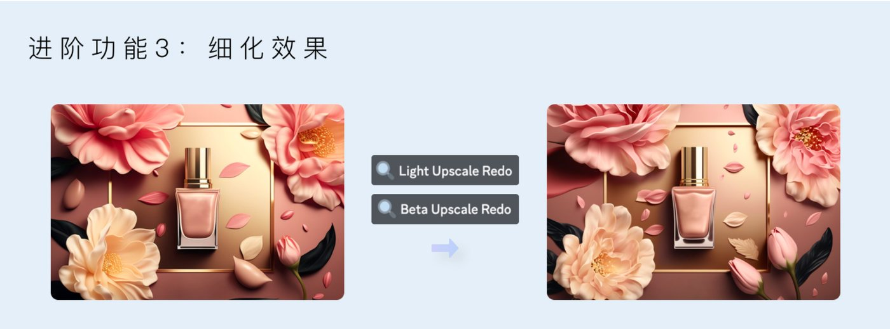
3. Light / Beta Upscale Redo
第三种是 Light Upscale Redo 与 Beta Upscale Redo，这两个功能都可以提升画质并细化效果。
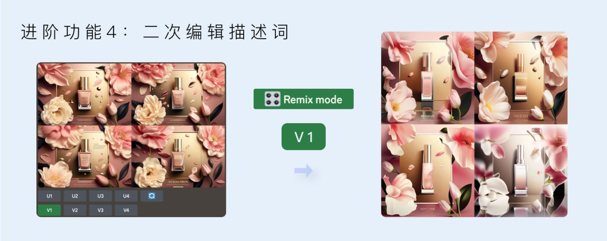
4. Remix Mode · 二次编辑关键词
最后一种也是变体生成方法。值得注意的是，需在 /setting 中开启 Remix mode 功能后，再次点 V 功能，此时可以二次编辑关键词；例如上图就通过 Remix mode 重置了图像的尺寸比例。
07 / 5.5 调整输出
将二次修正后的图像，经过设计师轻量化的调整工作，例如修正细节、添加文案后，即可看到最后的效果。
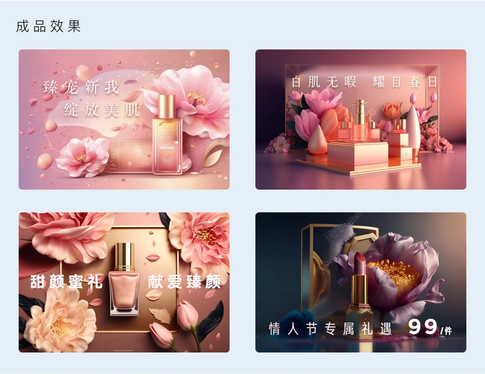